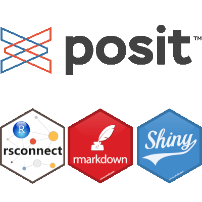
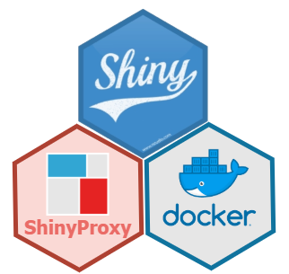

To reap all the advantages of the riskassessment
application, an organization needs to generate and store results
frequently derived from the app, including but not limited to:
- Uploading new packages, & storing their metric info and
riskmetricscore - Publishing reviewer comments
- Submitting package decisions
- Storing organization-wide metric weights and score-based thresholds for decision automation
- Credential management for authorized users
- Etc
To accomplish this, the app automatically creates and populates several storage solutions locally, in the app’s root directory:
- A
SQLitedatabase namedcredentials.sqlite(by default) for credential management - A
loggit.json, recording rudimentary logs of actions performed in the app - A
SQLitedatabase nameddatabase.sqlite(by default) for storing all pkg info, metric info, and comments/ decisions - A
auto_decisions.jsonfile, that initiates and keeps track of score-based thresholds for decision automation
Note that this article won’t cover the credentials database since that’s that’s been covered (at length) in the “Administrative Tools and Options” guide. As you might expect, some deployment environments come with limitations that are not amicable to storage method defined above! Spoiler alert - shinyapps.io is one of them. This article will provide more details about these crucial storage objects and share a run down of the following deployment options with helpful tips:
shinyapps.io
RStudio Connect
Shiny Server
ShinyProxy
Note! In the future, we’ll consider adding utilities that would allow users to connect to an external, or remote storage method (like a database).
The database.sqlite file

When the riskassessment::run_app() function is ran, the
code base will check if the database.sqlite file exists,
and if it doesn’t, several
tables will be initiated to create this database just before the app
launches. Note that the user has the authority to name the database file
to whatever they like using the assessment_db_name argument
in run_app(). In addition, you can include a file path here
preceding the file name if you wish to move the location of the database
away from the root directory. For example, the following code would
create a database called “test_database.sqlite” in the dev/
folder:
run_app(assessment_db_name = './dev/test_database.sqlite')At the time this vignette was authored, the database will initialize
the following tables with all NULL values:
-
comments: stores user comments, including user names associated with each comment entry, comment type, and timestamp -
community_usage_metrics: stores CRAN package downloads per month -
metric: stores metric info, including theriskmetricname, label, short description, type, and weight -
package_metrics: stores all package-specificrismetricmetrics -
package: Contains all package information, like name, version, maintainer, etc. It also contains a theriskmetricscore, the weighted score, decision, and timestamp.
There is one exception to this: the metric table is
populated with data via the initialize_metric_table.sql
file. If the user deploying the app wants to enter certain weights prior
to launching the application, this would be a good place to do it. For
example, if your org wants to place a heavier weight on “has_vignettes”,
then you can increase the weight value up accordingly. Of
course, you can still do this in the application, but that would require
a manual change once the app has launched. Similarly, if you want to
ignore a certain metric because it has little value to our organization,
you could give it a value of zero here.
Note: if any changes/ updates occur in these tables with a new
release of riskassessment, you may need to delete the
database file before re-running the app. Any such changes should be
announced as ‘breaking changes’ in the app. If so, remember to save a
copy of your current database file in another directory for backup
purposes.
The loggit.json file
As mentioned previously, the loggit.json file is
initiated to track general actions performed in the application,
especially those that would impact a change in the
database.sqlite file. At the time this vignette was
authored, here’s a summary of actions logged:
- App start up
- User log-ins
- Enabling/ Disabling or changing automated decision rules
- Decisions initiated by users or the decision automation rules, including
- When pkgs are added or removed from the database, or when there are issues with this process, like when there is an absence of data to that support certain metrics
- Re-weighting pkg metrics
- Any database issues or conflicts that may arise
Each loggit “transaction” recorded contains a lot of info, but most notably, it will contain a timestamp, record type (“info”, “warn”, or “error”), and a message. For database transactions, the message will usually include the query that was executed. All log entries are always printed out in the R console for your convenience. For example:
riskassessment::run_app()
> [1] "Log file set to loggit.json"
> Listening on http://127.0.0.1:4097
> {"timestamp": "2023-03-20T11:46:23-0400", "log_lvl": "INFO", "log_msg": "User admin signed on as admin"}
> {"timestamp": "2023-03-20T11:46:33-0400", "log_lvl": "INFO", "log_msg": "The following decision rules were implemented by admin (admin): Medium = (0.33__COMMA__ 0.66]; Low = (0__COMMA__ 0.33]; High = (0.66__COMMA__ 1]."}Feel free to use this information as you see fit!
The auto_decisions.json file
When riskassessment::run_app() is executed, a search is
performed to see if there exists an auto_decisions.json
file in the root directory. Without such file, an empty one will be
automatically created. This file is used to keep track of any decision
automation rules. As you add & edit the rules in the app, the
json file will update accordingly, keeping track of each
categories risk score range. For example, the following json file
coordinates with ranges displayed in the app:
{"Medium":[0.33,0.66],"Low":[0,0.33],"High":[0.66,1]}Deployment options
shinyapps.io
Beware: shinyapps.io does not offer persistent
storage of riskassessment’s SQLite database or
logs. Thus, it is not likely a viable deployment option
for your organization or group. For example, our demo
application (hosted on shinyapps.io) contains a pre-prepared
database of packages that can’t be permanently altered. It CAN be
altered within a session, but any changes will not
persist outside the session.
Posit Connect & Shiny Server

On a server, if you want to save files on disk, you’ll need to set write permissions accordingly on the folder you want to save the database, logs, and auto-decision json file.
On Posit Connect, you need to use an absolute path to specify the directory where to save the files. You can find more information here: Persistent Storage on Posit Connect.
Beyond that, it’s important to note that we strongly encourage those
deploying the app to take advantage of the renv.lock file
used to maintain package version dependencies. For more information on
how to use renv.lock and our general dev philosophy as it
pertains to package management, please read the “Using
renv” article. Highly related, we encourage the use of
git-backed deployment when possible. So, immediately after you
update/sync your package dependencies using renv, you may
want to run rsconnect::writeManifest() before deploying
from a dedicated branch. For more information on git-backed deployment
& manifest files, please read the Posit article on git-backed
content.
ShinyProxy

With ShinyProxy, you can use
a Docker volume to write files outside of the application container. In
application.yml, you use can something like this in the
specs describing the application:
container-volumes: [ “/var/log/shinylogs:/root/logs” ]
/var/log/shinylogs is a directory on the server where
you deploy your applications with ShinyProxy. /root/logs is
a directory inside your Docker image.